Illustration of rlberry environments¶
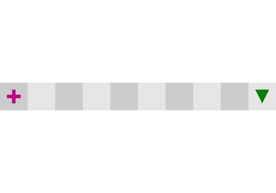
A demo of Chain environment
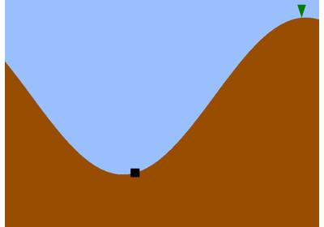
A demo of MountainCar environment
A demo of MountainCar environment
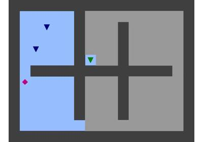
A demo of AppleGold environment
A demo of AppleGold environment
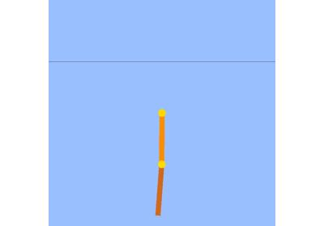
A demo of Acrobot environment with RSUCBVIAgent
A demo of Acrobot environment with RSUCBVIAgent
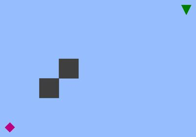
A demo of Gridworld environment with ValueIterationAgent
A demo of Gridworld environment with ValueIterationAgent
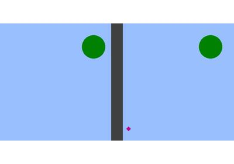
A demo of twinrooms environment
A demo of twinrooms environment
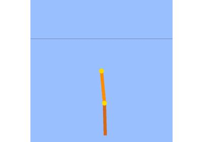
A demo of OldGymCompatibilityWrapper with old_Acrobot environment
A demo of OldGymCompatibilityWrapper with old_Acrobot environment
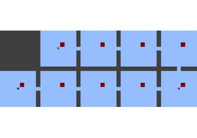
A demo of rooms environment
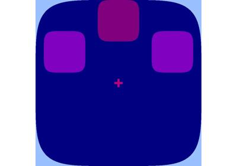
A demo of PBALL2D environment
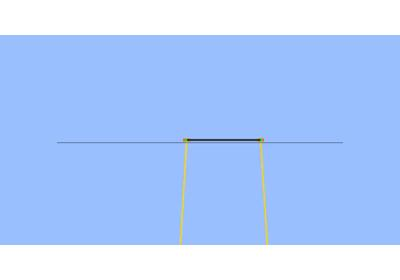
A demo of SpringCartPole environment with DQNAgent
A demo of SpringCartPole environment with DQNAgent
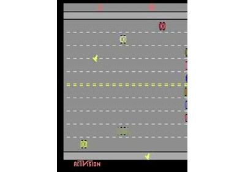
A demo of ATARI Freeway environment with DQNAgent
A demo of ATARI Freeway environment with DQNAgent
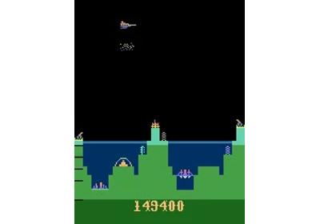
A demo of ATARI Atlantis environment with vectorized PPOAgent
A demo of ATARI Atlantis environment with vectorized PPOAgent
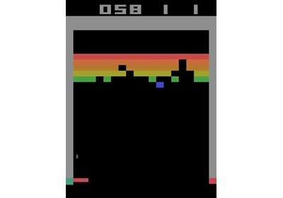
A demo of ATARI Breakout environment with vectorized PPOAgent
A demo of ATARI Breakout environment with vectorized PPOAgent